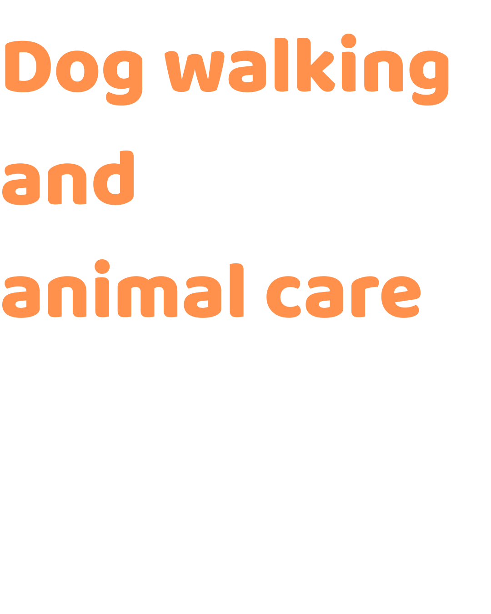
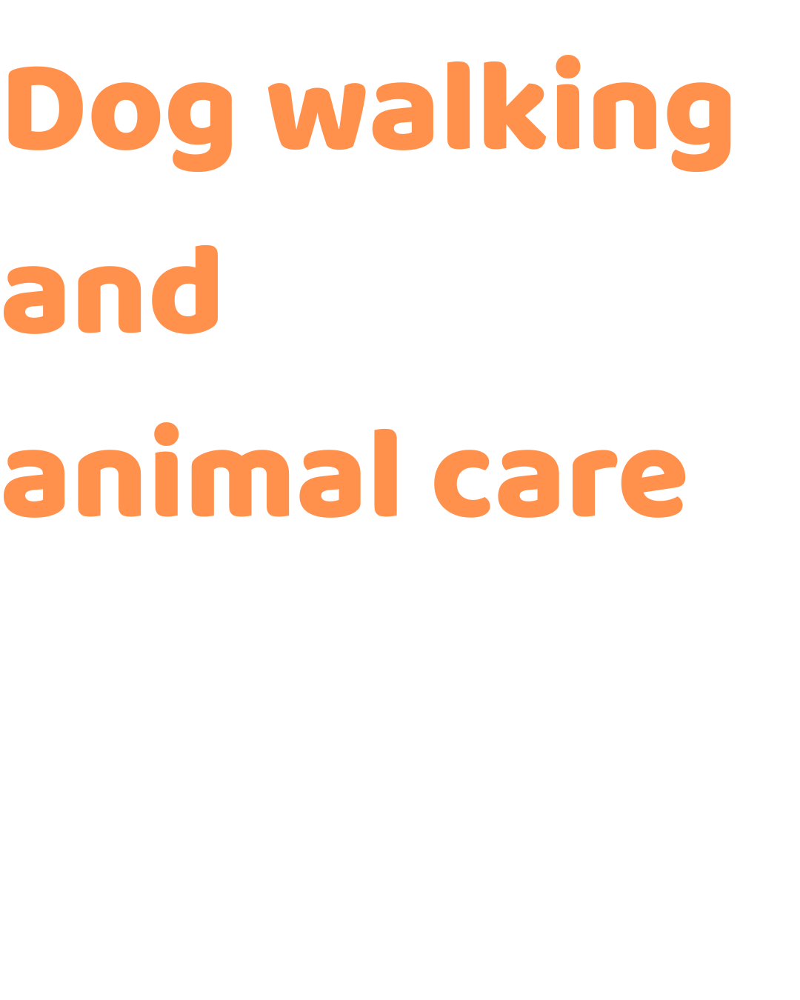

Musa & Davide
 

Scrivimi direttamente su WhatsApp per informazioni e disponibilità.

(Messaggio vuoto: si apre la chat e scrivi tu.)
Chi siamo
Qui puoi mettere una descrizione breve (2–4 frasi). Evita un blocco unico lungo: meglio spezzare in paragrafi.
Aggiungi dettagli utili: zona, disponibilità, servizi, stile (es. passeggiate, cura animali, ecc.).
Gallery